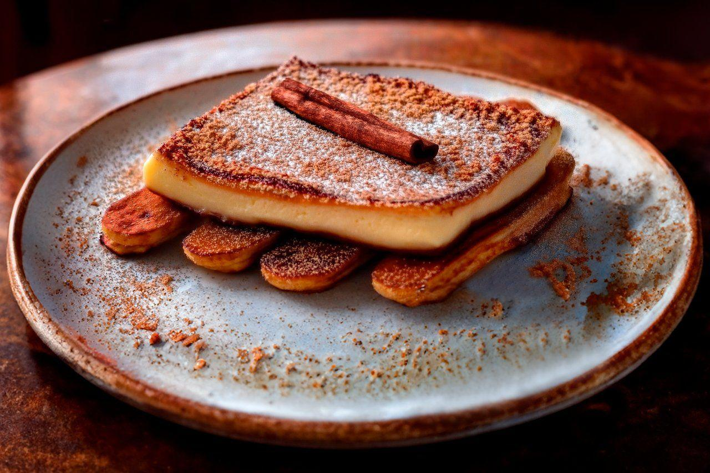
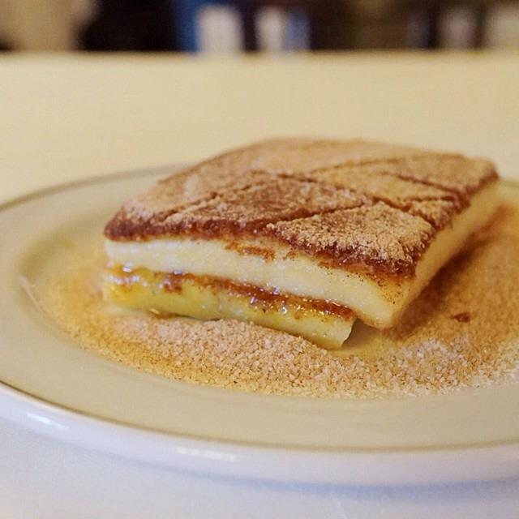

Sobre a cartola de queijo
entenda a importancia da cartola de queijo para a historia de pernambuco.

A cartola de queijo é um prato típico da culinária pernambucana, especialmente da região do Agreste. É feita com queijo coalho, que é frito e servido com mel ou melaço.
A cartola possui um significado cultural importante para Pernambuco. Ela ajuda a preservar tradições, representa a diversidade da culinária nordestina e faz parte da memória gastronômica de várias gerações. Em 2009, a cartola foi reconhecida como Patrimônio Cultural Imaterial de Pernambuco.

curiosidades sobre a cartola de queijo
Seu nome provavelmente vem da aparência da sobremesa, que lembra uma antiga cartola.

origem da cartola de queijo
A cartola de queijo é um prato típico da culinária pernambucana, especialmente da região do Agreste. É feita com queijo coalho, que é frito e servido com mel ou melaço.
Receita da cartola de queijo
Ingredientes: 4 fatias de queijo coalho, 4 colheres de sopa de açúcar, 2 colheres de sopa de canela em pó, 4 colheres de sopa de manteiga, 4 colheres de sopa de mel ou melaço.